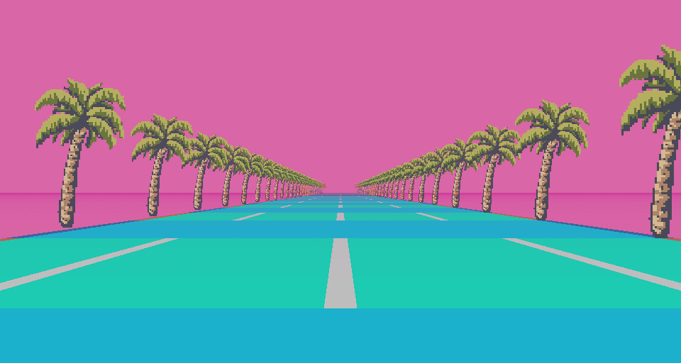

WELCOME TO...

MARK BARTOLOMEO'S PROTFOLIO
Bringing it back like its 1999!
I am a highly motivated employee, who has recently relocated from New Jersey to Plymouth, MA. I desire a new position utilizing my education in Computer Science and Information Technology. I have a very strong work ethic and am willing to learn new things and take on new challenges. I am a fast learner and I pride myself in mastering new skills especially with the fast changing world of technology in IT. In my previous job I dealt with customer relationships and project management to better the daily workflow. I can work independently or as a team member. I enjoy hard work, problem solving and a continued education.
 Jobs |
 Education |
 Volunteer |
|
Mercedes Benz of Nanuet: Associate Nanuet, NY 2022-2026Curry College ITS: Help Desk
Milton, MA 2019-2020 Roche Brothers: Cashier Mashpee, MA 2013-2016 |
Graduated Northern Highlands in 2018 Attended Curry College and graduated with a Bachelors of Science in Information Technology |
Ran Falmouth Road Race for 5 years and raised money for Boston Childerns Hospital. Volunteered at Boston Code Camp in Burlington, MA in 2018 and 2019. Help prepare yearly holiday party for the Cabrini Trust New York Gift Preparation. |

 Lets connect on
Lets connect on  Check out my
Check out my  Plymouth MA, 02360
Plymouth MA, 02360